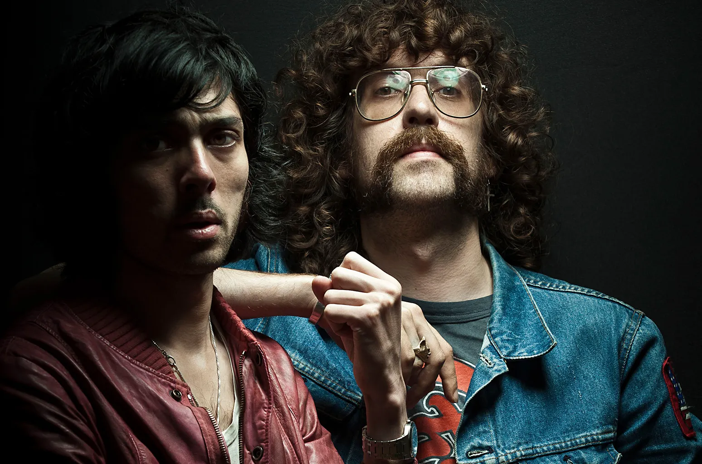

Justice
Years Active: 2003–present
Genre/s: Electro house, French house, electronic rock, nu-disco, electroclash
Label/s: Because, Ed Banger, Elektra, Downtown, Big Beat, Atlantic
Members: Gaspard Augé, Xavier de Rosnay
Justice is a French electronic music duo consisting of Gaspard Augé and Xavier de Rosnay. They are known for incorporating strong rock and disco influences into their music and image.
The band's debut album Cross was released in June 2007. The album was later nominated for a Grammy Award for Best Electronic/Dance Album and came in at number 15 on Pitchfork's "Top 50 Albums of 2007" and number 18 on Blender's "25 Best Albums of 2007" list. It was nominated for the 2007 Shortlist Music Prize, losing out to The Reminder by Feist. The band's remix of the MGMT song "Electric Feel" won the Grammy Award for Best Remixed Recording, Non-Classical in 2009.
In September 2009, it was announced that Justice would be moving to WMG/Atlantic's newly relaunched Elektra Records label. The band reportedly started to work on its second album in mid-2010. The first single, "Civilization", was released on 28 March 2011. The band released its second album, Audio, Video, Disco, on 24 October 2011. This was followed by the live album on 7 May 2013, titled Access All Arenas. Justice announced their third album, Woman, through their Facebook page, and it was released on 18 November 2016. The band won a 2019 Grammy Award for Best Electronic/Dance Album for their album Woman Worldwide.
After a hiatus of seven years, Justice released its fourth album Hyperdrama on 26 April 2024. The record was nominated for the 67th Grammy Awards for Best Electronic/Dance Album, with the single "Neverender" featuring Tame Impala winning Best Electronic/Dance Recording. The duo collaborated with the Weeknd on the song "Wake Me Up", which serves as the opening track from the latter's sixth studio album, Hurry Up Tomorrow (2025).